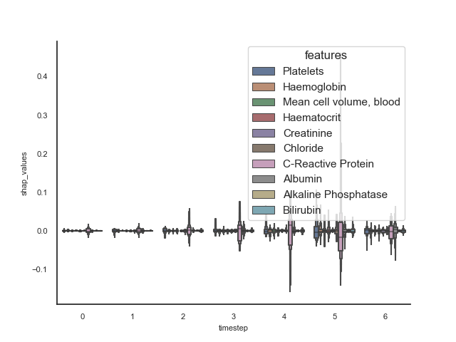
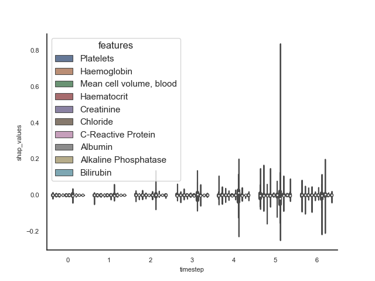
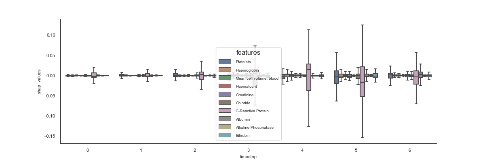

Note
Click here to download the full example code
Main 07 - 2dbin with shap.csv
- 
- 
- 
Out:
Unnamed: 0 sample timestep features feature_values shap_values
4 4 0 0 Platelets 0.0 -0.001705
5 5 0 0 Haemoglobin 0.0 -0.000918
6 6 0 0 Mean cell volume, blood 0.0 -0.000654
7 7 0 0 Haematocrit 0.0 -0.000487
12 12 0 0 Creatinine 0.0 -0.001081
17 17 0 0 Chloride 0.0 -0.000858
21 21 0 0 C-Reactive Protein 0.0 0.010186
22 22 0 0 Albumin 0.0 0.000411
23 23 0 0 Alkaline Phosphatase 0.0 0.000486
28 28 0 0 Bilirubin 0.0 0.000500
7 # Libraries
8 import seaborn as sns
9 import pandas as pd
10 import numpy as np
11 import matplotlib as mpl
12 import matplotlib.pyplot as plt
13
14 from scipy import stats
15 from matplotlib.colors import LogNorm
16
17 sns.set_theme(style="white")
18
19 # See https://matplotlib.org/devdocs/users/explain/customizing.html
20 mpl.rcParams['axes.titlesize'] = 8
21 mpl.rcParams['axes.labelsize'] = 8
22 mpl.rcParams['xtick.labelsize'] = 8
23 mpl.rcParams['ytick.labelsize'] = 8
24
25 # Load data
26 data = pd.read_csv('./data/shap.csv')
27
28 # Filter
29 data = data[data.features.isin([
30 'Ward Lactate'
31 'Alanine Transaminase',
32 'Albumin',
33 'Alkaline Phosphatase',
34 'Bilirubin',
35 'C-Reactive Protein',
36 'Chloride',
37 'Creatinine',
38 'Platelets',
39 'Haemoglobin',
40 'Mean cell volume, blood',
41 'Haematocrit'
42 ])]
43
44 # Show
45 print(data.head(10))
46
47
48
49 # .. todo:: Change flier size, cmap, ...
50
51 ax = sns.boxenplot(data, x='timestep', y='shap_values',
52 hue='features', saturation=0.5, showfliers=False)
53 sns.despine(ax=ax)
54
55 plt.figure()
56 ax = sns.violinplot(data, x='timestep', y='shap_values',
57 hue='features', saturation=0.5, showfliers=False)
58 sns.despine(ax=ax)
59
60 plt.figure(figsize=(12, 4))
61 ax = sns.boxplot(data, x='timestep', y='shap_values',
62 hue='features', saturation=0.5, showfliers=False)
63 sns.despine(ax=ax)
64 plt.setp(ax.get_legend().get_texts(), fontsize='7')
65
66 plt.show()
Total running time of the script: ( 0 minutes 6.356 seconds)